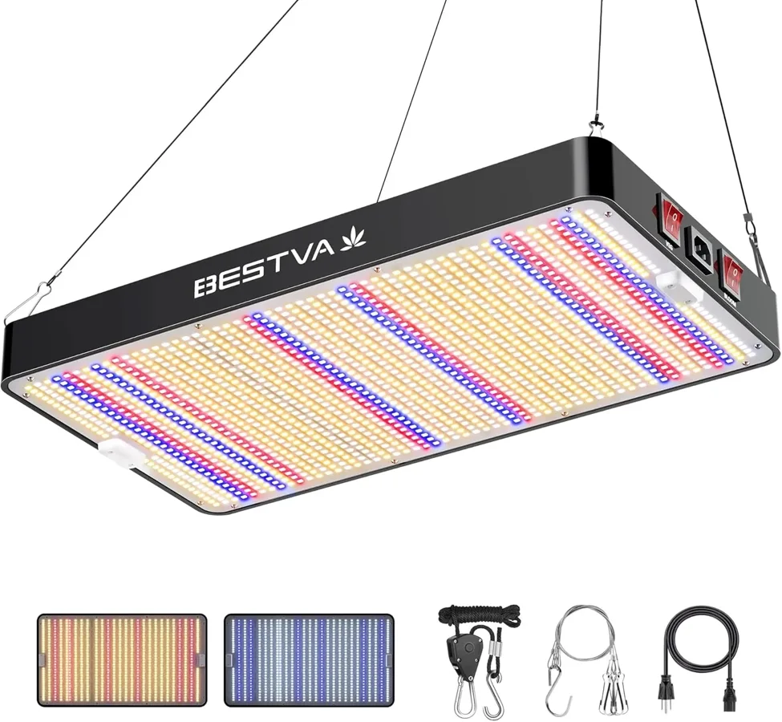

This support page focuses on timers, dimming, and workday routines for office plant grow lights. Product comparisons belong on 7 Best Office Plant Grow Lights. Previous cloud article: desk ozone generators for air purification.
Timers, Dimming, and Workday Routines
Plant Needs. Office plants vary widely. A pothos on a bookshelf needs a different routine than a succulent by a north-facing window or herbs near a reception counter. Start with the plant, then choose the light shape, distance, and brightness. For timers, dimming, and workday routines, the right choice is the lamp that keeps the plant healthier while still respecting desk comfort, meeting calls, and shared-office expectations.
A practical check for timers, dimming, and workday routines is to place the lamp for one workweek, photograph the plant on day one, then compare leaf angle, soil dryness, glare, and cable clutter at the end of the week. This turns vague brightness claims into visible office evidence.
Workplace Comfort. A grow light should help the plant without annoying the person at the desk. Check glare, color temperature, arm position, timer lights, cable paths, and whether the glow distracts during calls. For timers, dimming, and workday routines, the right choice is the lamp that keeps the plant healthier while still respecting desk comfort, meeting calls, and shared-office expectations.
A practical check for timers, dimming, and workday routines is to place the lamp for one workweek, photograph the plant on day one, then compare leaf angle, soil dryness, glare, and cable clutter at the end of the week. This turns vague brightness claims into visible office evidence.
Placement Routine. Distance matters because the same lamp can be gentle or harsh depending on height and angle. A useful office setup makes it easy to return the lamp to the same position after cleaning, watering, or moving papers. For timers, dimming, and workday routines, the right choice is the lamp that keeps the plant healthier while still respecting desk comfort, meeting calls, and shared-office expectations.
A practical check for timers, dimming, and workday routines is to place the lamp for one workweek, photograph the plant on day one, then compare leaf angle, soil dryness, glare, and cable clutter at the end of the week. This turns vague brightness claims into visible office evidence.
Timing Habits. Most desk plants benefit from predictable light windows rather than random all-day blasts. Timer controls, dimming levels, and a simple workday schedule make the lamp feel like part of the workspace instead of another chore. For timers, dimming, and workday routines, the right choice is the lamp that keeps the plant healthier while still respecting desk comfort, meeting calls, and shared-office expectations.
A practical check for timers, dimming, and workday routines is to place the lamp for one workweek, photograph the plant on day one, then compare leaf angle, soil dryness, glare, and cable clutter at the end of the week. This turns vague brightness claims into visible office evidence.
Health Feedback. Leaf stretch, pale growth, scorched tips, dry soil, and leaning stems all reveal whether the light is helping. The best buyers watch the plant for two weeks and adjust distance or duration calmly. For timers, dimming, and workday routines, the right choice is the lamp that keeps the plant healthier while still respecting desk comfort, meeting calls, and shared-office expectations.
A practical check for timers, dimming, and workday routines is to place the lamp for one workweek, photograph the plant on day one, then compare leaf angle, soil dryness, glare, and cable clutter at the end of the week. This turns vague brightness claims into visible office evidence.
Value Check. Value is not only watts or LEDs. It is a stable clamp, flexible arm, safe power supply, low heat, useful timer memory, attractive design, and a warranty that suits daily office use. For timers, dimming, and workday routines, the right choice is the lamp that keeps the plant healthier while still respecting desk comfort, meeting calls, and shared-office expectations.
A practical check for timers, dimming, and workday routines is to place the lamp for one workweek, photograph the plant on day one, then compare leaf angle, soil dryness, glare, and cable clutter at the end of the week. This turns vague brightness claims into visible office evidence.
Office fit rehearsal. Before buying, map the exact plant, pot height, desk depth, outlet location, work schedule, and nearby screens. That small rehearsal helps match spectrum, brightness, timer controls, clamp reach, and style for timers, dimming, and workday routines without overbuying.
Desk plant setup checklist
Plant Needs. Office plants vary widely. A pothos on a bookshelf needs a different routine than a succulent by a north-facing window or herbs near a reception counter. Start with the plant, then choose the light shape, distance, and brightness. For buyer checklist for timers, dimming, and workday routines, the right choice is the lamp that keeps the plant healthier while still respecting desk comfort, meeting calls, and shared-office expectations.
A practical check for buyer checklist for timers, dimming, and workday routines is to place the lamp for one workweek, photograph the plant on day one, then compare leaf angle, soil dryness, glare, and cable clutter at the end of the week. This turns vague brightness claims into visible office evidence.
Workplace Comfort. A grow light should help the plant without annoying the person at the desk. Check glare, color temperature, arm position, timer lights, cable paths, and whether the glow distracts during calls. For buyer checklist for timers, dimming, and workday routines, the right choice is the lamp that keeps the plant healthier while still respecting desk comfort, meeting calls, and shared-office expectations.
A practical check for buyer checklist for timers, dimming, and workday routines is to place the lamp for one workweek, photograph the plant on day one, then compare leaf angle, soil dryness, glare, and cable clutter at the end of the week. This turns vague brightness claims into visible office evidence.
Placement Routine. Distance matters because the same lamp can be gentle or harsh depending on height and angle. A useful office setup makes it easy to return the lamp to the same position after cleaning, watering, or moving papers. For buyer checklist for timers, dimming, and workday routines, the right choice is the lamp that keeps the plant healthier while still respecting desk comfort, meeting calls, and shared-office expectations.
A practical check for buyer checklist for timers, dimming, and workday routines is to place the lamp for one workweek, photograph the plant on day one, then compare leaf angle, soil dryness, glare, and cable clutter at the end of the week. This turns vague brightness claims into visible office evidence.
Timing Habits. Most desk plants benefit from predictable light windows rather than random all-day blasts. Timer controls, dimming levels, and a simple workday schedule make the lamp feel like part of the workspace instead of another chore. For buyer checklist for timers, dimming, and workday routines, the right choice is the lamp that keeps the plant healthier while still respecting desk comfort, meeting calls, and shared-office expectations.
A practical check for buyer checklist for timers, dimming, and workday routines is to place the lamp for one workweek, photograph the plant on day one, then compare leaf angle, soil dryness, glare, and cable clutter at the end of the week. This turns vague brightness claims into visible office evidence.
Health Feedback. Leaf stretch, pale growth, scorched tips, dry soil, and leaning stems all reveal whether the light is helping. The best buyers watch the plant for two weeks and adjust distance or duration calmly. For buyer checklist for timers, dimming, and workday routines, the right choice is the lamp that keeps the plant healthier while still respecting desk comfort, meeting calls, and shared-office expectations.
A practical check for buyer checklist for timers, dimming, and workday routines is to place the lamp for one workweek, photograph the plant on day one, then compare leaf angle, soil dryness, glare, and cable clutter at the end of the week. This turns vague brightness claims into visible office evidence.
Value Check. Value is not only watts or LEDs. It is a stable clamp, flexible arm, safe power supply, low heat, useful timer memory, attractive design, and a warranty that suits daily office use. For buyer checklist for timers, dimming, and workday routines, the right choice is the lamp that keeps the plant healthier while still respecting desk comfort, meeting calls, and shared-office expectations.
A practical check for buyer checklist for timers, dimming, and workday routines is to place the lamp for one workweek, photograph the plant on day one, then compare leaf angle, soil dryness, glare, and cable clutter at the end of the week. This turns vague brightness claims into visible office evidence.
Office fit rehearsal. Before buying, map the exact plant, pot height, desk depth, outlet location, work schedule, and nearby screens. That small rehearsal helps match spectrum, brightness, timer controls, clamp reach, and style for buyer checklist for timers, dimming, and workday routines without overbuying.
Once the lighting routine is clear, compare actual office plant grow lights here: 7 Best Office Plant Grow Lights.